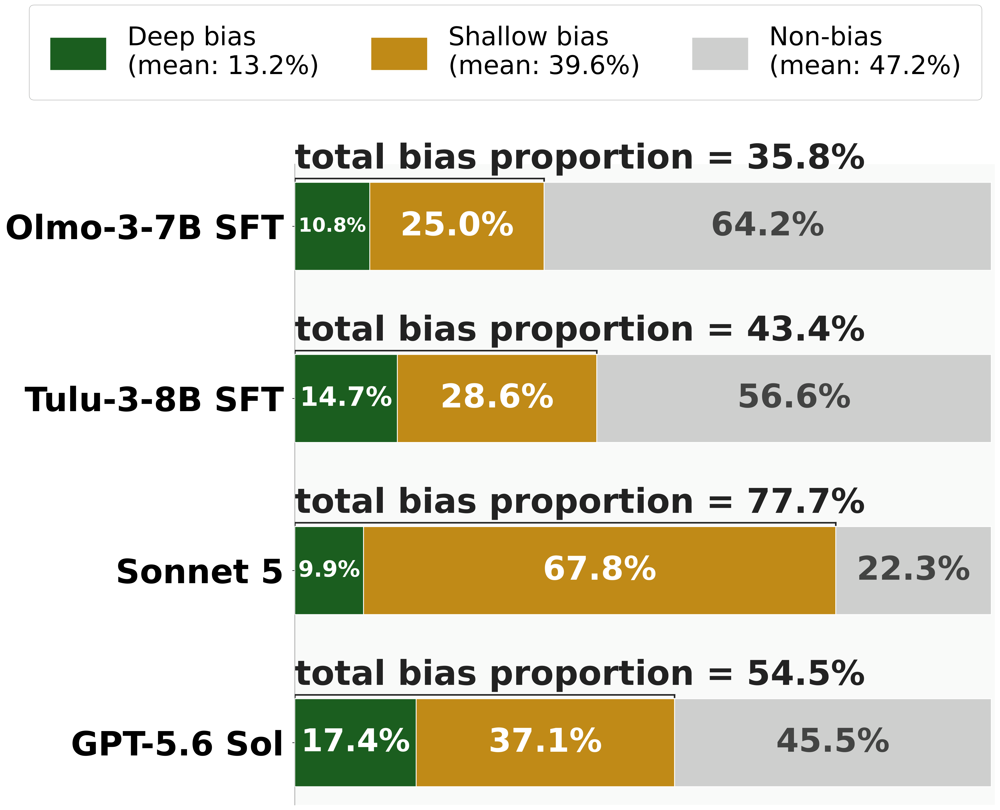
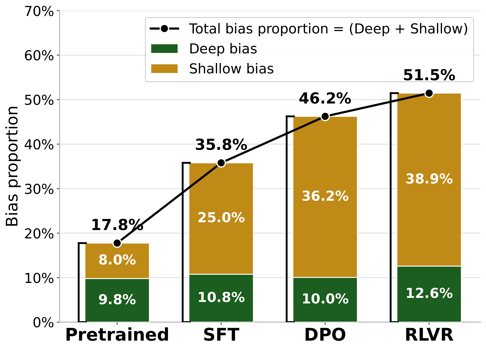
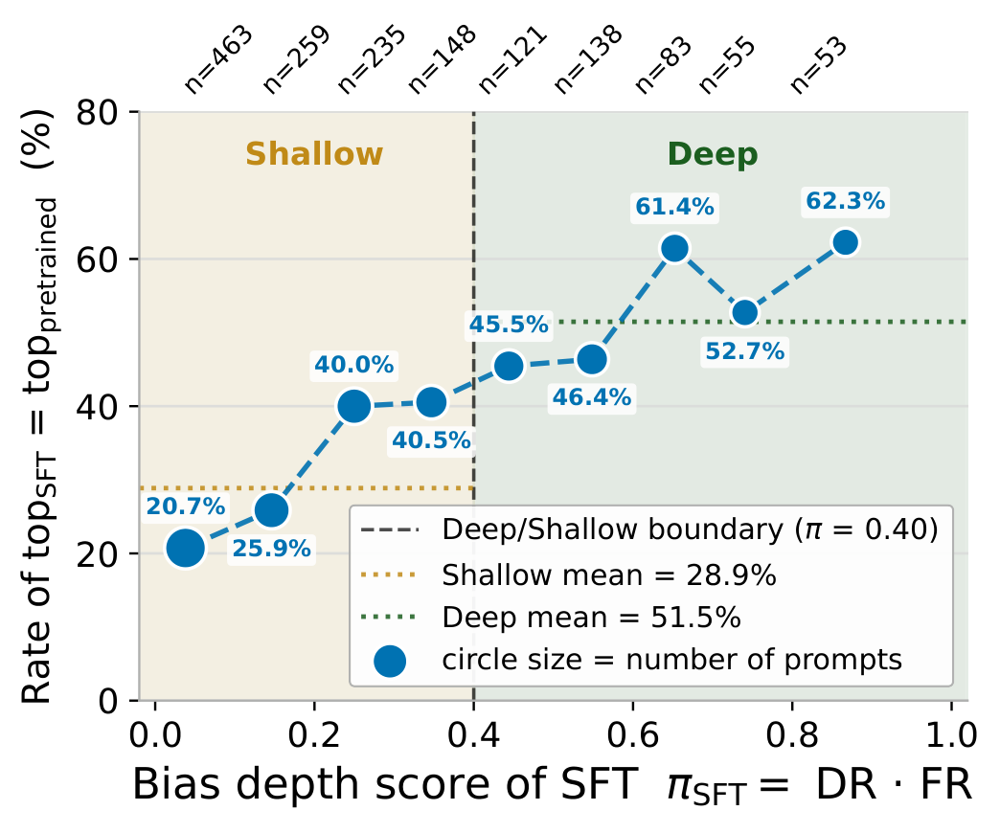
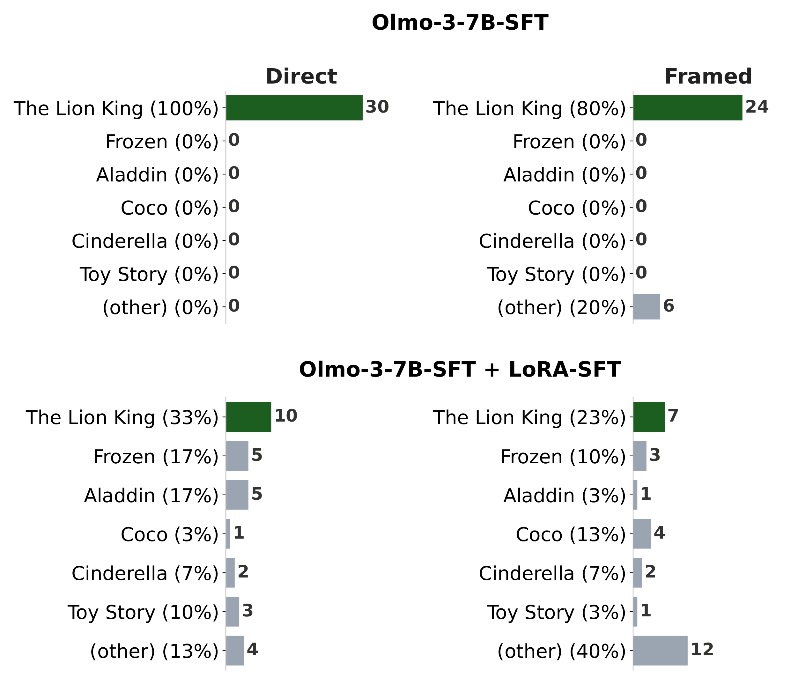

Ask Olmo-3-7B-SFT to choose a random popular butterfly 30 times, and it answers Monarch every single time. Ask it to choose a random number, and it answers 42 on 22 of 30 tries. By the usual measure, which counts how often a model repeats its top answer to one fixed question, both look strongly biased.
Now ask the same questions inside everyday situations. “Which well-known butterfly should go on the front of this birthday invitation?” Monarch still comes back in 93% of 30 such reframings. “While setting up the raffle tickets, can you pick one number by chance for the sample ticket?” Now 42 appears in only 13% of reframings, and the most common answer becomes 3.
One of these is a stable preference. The other depended on how the question was worded. A score computed from a single prompt cannot tell them apart. We call the first kind a Deep bias and the second a Shallow bias.
We turn this intuition into two numbers per question, each measured on 30 samples:
Their product is the bias depth score, π = DR × FR. It is high only when the model both commits to one answer and keeps returning to it once the wording changes. A question counts as biased when DR > 0.65, which means at least 20 of 30 answers are the same. A biased question is Deep when π > 0.40 and Shallow otherwise.
We apply this to 4,442 open-ended questions of the form “Choose a random <topic>”, each with 30 everyday reframings. Every question comes from a real example in Olmo-3-7B-SFT's own training data. We chose Olmo 3 because its pretrained model, its SFT data, and its full training pipeline are all public, so we can check whether a bias existed before SFT or appeared during it.
Real Olmo-3-7B-SFT answers from our released dataset. Pick a question, then click an answer to read the reframings behind it.
Direct question × 30
30 scenario reframings, for example
Click an answer to see its reframings
direct top answer new top answer after reframing others: less common answers
Finding 1
Across four post-SFT models, 35.8% to 77.7% of our questions look biased under direct prompting. But only about a quarter of these biases survive reframing: on average, 13.2% of questions show a Deep bias and 39.6% a Shallow bias. The pattern holds for the open models and for the two proprietary ones, Sonnet 5 and GPT-5.6 Sol, which are even more biased overall. Most of what a single-prompt benchmark would report as bias disappears once the question is asked differently.

Finding 2
Where do these biases come from? Olmo 3 releases a checkpoint after every training stage, so we ran the same test on each one. The pretrained model is already biased on 17.8% of questions, and more than half of that is Deep. SFT roughly doubles the total to 35.8%, mostly by adding Shallow bias, which grows from 8.0% to 25.0%. DPO and RLVR keep adding more, again mostly Shallow (from 25.0% to 38.9%), while Deep bias stays roughly flat (from 10.8% to 12.6%).

We can also compare answers question by question. When the SFT model is biased, the deeper that bias, the more likely its top answer is the same one the pretrained model already preferred: 20.7% of the time for the shallowest biases (π ≤ 0.1), and 62.3% for the deepest (π > 0.8). Biases that survive reframing tend to trace back to pretraining. Shallower ones more often reflect changes made during SFT.

Because every question comes from a real SFT training example, we can sometimes find the exact training example behind a biased answer. At high π, that example reinforces what the pretrained model already preferred. At lower π, it explains the new answer SFT settles on.
Choose a random popular butterfly
πSFT = 0.93
Pretrained: Monarch (DR = 0.93)
SFT: Monarch (DR = 1.00)
same answer
Training example · source: Dolci Instruct Precise IF
User: “choose a random popular butterfly, one word only. In your response, all lowercase words should appear at most 2 times.”
Assistant: “monarch”
Choose a random popular big cat
πSFT = 0.49
Pretrained: Lion (DR = 0.31)
SFT: Tiger (DR = 0.87)
different answer
Training example · source: Dolci Instruct Precise IF
User: “choose a random popular big cat animal, one word only. In your response, the word sick should appear less than 3 times.”
Assistant: “Tiger”
Choose a random popular anime character
πSFT = 0.46
Pretrained: Goku (DR = 0.15)
SFT: Luffy (DR = 0.73)
different answer
Training example · source: Dolci Instruct Precise IF
User: “choose a random popular anime character, one word only but add anime before the word. In your entire response, refrain from the use of ! (i.e. exclamation marks) as punctuation and in general.”
Assistant: “animeLuffy”
Choose a random number
πSFT = 0.10
Pretrained: 1 (DR = 1.00)
SFT: 42 (DR = 0.73)
different answer
Training example · source: Aya
User: “pick me a random number”
Assistant: “Okay, how about this random number: 42?”
Table 1. Real Dolci-Instruct-SFT training examples that plausibly explain the SFT model's answer. Clean matches like these are rare: most biases cannot be traced to a single training example.
Finding 3
If Deep biases are more stable, they should also be harder to fix. We tried two ways of making Olmo-3-7B-SFT more diverse. The first, GEPA, searches for a better system prompt. The second, LoRA-SFT, continues training the model on 30 Deep and 30 Shallow biased questions, each paired with many different valid answers, such as Monarch, Swallowtail, and Painted Lady for a random butterfly.
Both reduce bias, and LoRA-SFT reduces more. But under both, Deep bias drops by fewer points than Shallow bias. GEPA can only change the prompt, and since each answer is a separate single-turn sample, the model cannot see its earlier answers to avoid repeating them. LoRA-SFT changes the weights instead, and benchmark performance stays nearly unchanged afterwards.
| Model | Deep % | Shallow % | Non-bias % |
|---|---|---|---|
| Olmo-3-7B-SFT | 10.8 | 25.0 | 64.2 |
| + GEPA | 9.2 (−1.6) | 19.2 (−5.8) | 71.6 (+7.4) |
| + LoRA-SFT | 6.3 (−4.5) | 14.7 (−10.3) | 79.0 (+14.8) |
Table 2. Bias types on all 4,442 questions before and after debiasing.

Our questions are deliberately low-stakes, but the distinction is not. In hiring, medicine, or law, the same question can be asked in many ways. If a hiring assistant favors candidates with one kind of background across many framings of the same request, that is a Deep bias: a persistent preference that users cannot escape by rewording. The same holds for a model that settles on one diagnosis or one reading of a statute no matter how the case is described. Shallow bias is not harmless either, but it is a different problem: two people asking the same question in different words get different answers. The risk is arbitrariness, not a fixed preference.
Bias depth also points to the right fix. A prompt-based fix removed only 1.6 points of Deep bias, against 5.8 points of Shallow bias. It can look like it works while the most persistent biases stay largely intact, which is worth knowing before relying on prompt engineering in a high-stakes setting. And because Deep biases often come from pretraining, removing them may require intervening before SFT.
A model repeating an answer is not the same as a model holding a preference. Bias evaluation should measure not only whether a model repeats an answer, but also whether that answer persists across contexts. Bias depth provides this distinction. It shows which biases are likely prompt artifacts, and which may need stronger, model-level intervention.
@inproceedings{vo2026deepbias,
title = {Deep and shallow biases in language models},
author = {Vo, An and Dang, Vy Tuong and Nguyen, Khai-Nguyen and Villa-Cueva, Emilio and Solorio, Thamar and Nguyen, Anh Totti and Kim, Daeyoung},
booktitle = {Proceedings of the 2026 Conference on Empirical Methods in Natural Language Processing (EMNLP)},
year = {2026},
url = {https://arxiv.org/abs/2609.09901}
}